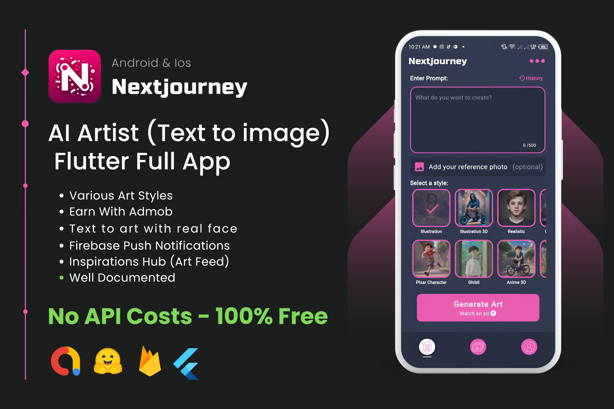

AI Text Art Generator App - Flutter Full App
Nextjourney is a feature-rich Flutter application that unlocks the creative potential of AI art generation.
Built with a user-centric approach, it provides an intuitive and engaging platform for users to explore the
fascinating world of AI-powered artistry.

Demo App
Explore the demo app on Google Play: Nextjourney Demo App
Full Source Code
Get the full source code: Nextjourney Full Source Code
Core Functionalities
- Text-to-Image Generation: At the heart of Nextjourney lies its text-to-image generation
capability. Users can input descriptive text prompts, allowing the AI to interpret and translate their
words into unique visual creations.
- Extensive Art Styles: Catering to diverse artistic preferences, the app offers a wide
range of styles, including:
- Traditional: Illustration, Painting, Watercolor, Ink Wash, Pointillism
- 3D and Digital Art: 3D Style, Illustration 3D, Unreal Engine, 3D Anime
- Artistic Movements: Pop Art, Vaporwave Art, Van Gogh, Fauvism, Naive Art, Impasto
- Specific Genres: Cyberpunk, Steampunk, Futuristic, Ghibli, Pixar, Anime
- Design-Oriented: Logo Design, Icon Design, T-Shirt Design
- Reference Photos: Users can optionally include a reference photo to guide the AI's
artistic interpretation, adding a personalized touch to the generated artwork.
- Face Swap: This innovative feature allows users to swap faces within the generated
artwork, creating amusing or personalized results.
- Prompt History: A dedicated prompt history feature allows users to revisit and reuse
previous prompts, sparking creativity and saving time.
User Management and Social Features
- Google Sign-In: Nextjourney allows users to sign in with their Google accounts. This enables
them to save generated artwork to their personal gallery and access features like the Inspiration Hub.
- User Art Gallery: A personalized gallery allows users to store and manage their generated
artworks, keeping their creative journey organized.
- Favorites Collection: Users can curate a collection of their favorite AI-generated pieces,
providing easy access to cherished creations.
- Sharing Capabilities: Nextjourney encourages community engagement by enabling users to share
their artwork within the app's Inspiration Hub or on external social media platforms.
- Inspiration Hub: This feature fosters a vibrant community of creators. Users can explore a
feed of artworks generated by others, drawing inspiration and discovering new artistic possibilities.
Technical Highlights
- Flutter Framework: The app is built using Flutter, ensuring cross-platform compatibility
and a smooth user experience across Android and iOS devices.
- GetX State Management: GetX efficiently manages the app's state with its reactive approach,
ensuring seamless UI updates and optimal performance.
- Firebase Backend: Firebase provides a robust backend infrastructure for Nextjourney:
- Realtime Database: Stores user data, artwork information, and interaction data like
likes and favorites.
- Storage: Securely stores the generated images, ensuring accessibility and
persistence.
- AI Model Integration:
- Hugging Face API: Nextjourney utilizes the Hugging Face API to access and employ
state-of-the-art AI models for generating artwork.
- RapidAPI Face Swapper API: The face swap functionality is powered by the RapidAPI
Face Swapper API, offering a seamless face-swapping experience.
- Additional Packages: Several other packages enhance the app's functionality:
- Image Picker: Allows users to select reference photos from their device's gallery or camera.
- Share Plus: Enables sharing artwork on social media and other platforms.
- Video Player & Chewie: Facilitates the loading animation with video playback.
- AdMob: Provides optional support for displaying ads.
- URL Launcher: Opens external links within the app.
- Local Notifications: Enables sending notifications to users for engagement and updates.
Development and Customization
Nextjourney boasts a well-structured codebase, making it easy for developers to understand, modify, and extend.
The app is highly customizable, allowing developers to:
- Tailor the UI: Change colors, fonts, layouts, and overall aesthetic to match specific branding or
preferences.
- Expand Art Styles: Integrate additional AI models to offer a wider range of art styles and cater to
evolving user preferences.
- Implement New Features: Add innovative functionalities to enhance the user experience and differentiate the
app.
- Monetization Strategies: Explore various monetization options, such as in-app purchases, premium features, or
alternative ad networks.
- Community Features: Build upon the existing community features, like introducing challenges, contests, or
collaborative art projects.
Developer
This project was developed by Muhammad Bilal: Muhammad Bilal's LinkedIn
We encourage you to explore Nextjourney's codebase and build upon its foundation to create your own unique AI art
generation experience!